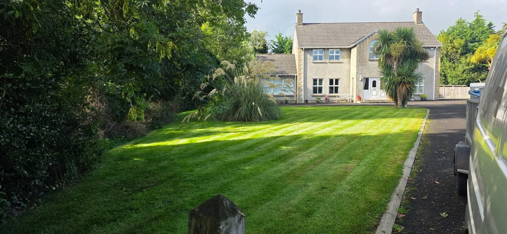
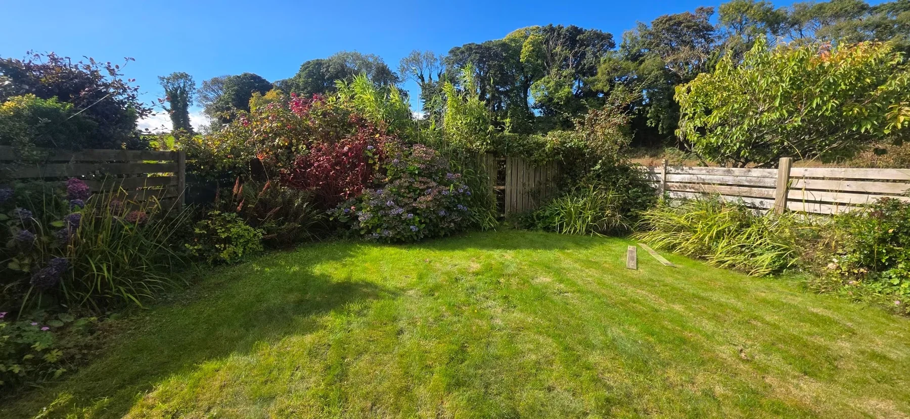
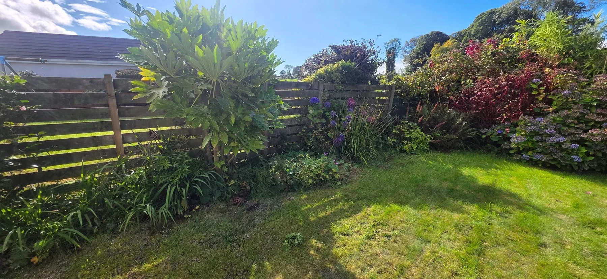
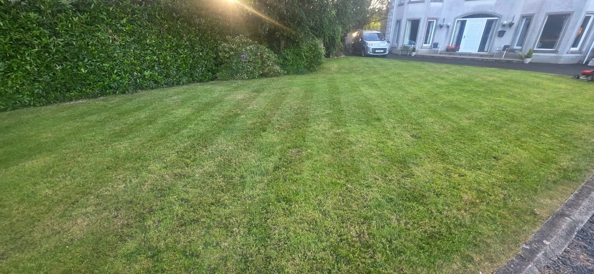

Garden CareGrass cutting, strimming and tidy-ups

BALLYMONEY · NORTH COAST AREA
Your outdoors.
Looked after.
Grass cutting, hedge care, groundworks, pressure washing and fence repairs. Professional, affordable ground and garden services for jobs of all sizes.
Free, no-obligation quotesGround & garden careNorth Coast area
Hedge CuttingNeat boundaries and shaped hedges
GroundworksPreparation and practical outdoor work
FencingRepairs, replacement panels and new fencing
Pressure WashingOutdoor surface cleaning enquiries
GROUND & GARDEN SERVICES
Less to tackle.
More to enjoy.
MS Ground and Garden offers professional and affordable help for outdoor jobs of all sizes, based in Ballymoney and covering the North Coast area.
Keep lawns and hedges in shape, tackle overgrown areas or discuss the groundwork and fencing your space needs.
Tell us about your job →

LAWN & HEDGE CARE
A tidy finish.
Well-cut grass and neat hedges make a garden feel cared for. Discuss mowing, strimming and hedge cutting for your property, whether you need a tidy-up or ongoing help.
Explore garden care →
Grass cutting

Hedge care
OUR WORK
Outdoors, improved.
MS Ground and Garden’s work, from lawns and hedges to clearance and outdoor preparation. Tap a photo to view it in full.
GARDEN & GROUND CARE
Space to move forward.
From clearing an outdoor route to working around established planting, each job starts with what your property needs. Share photos and access details to discuss the work.
Explore groundworks →BALLYMONEY & NORTH COAST
Practical help.
Proper care.
MS Ground and Garden brings together garden maintenance and practical outdoor services. The business is based on Knock Road, Ballymoney, and advertises fencing work across the North Coast area.
01
Jobs of all sizes
Ask about the small tasks as well as the bigger outdoor jobs.
02
A range of services
Grass cutting, hedge care, strimming, groundworks, pressure washing and fencing.
03
Free quotes
Explain the work, share your location and send photos for a no-obligation quote.
FREE QUOTE
What needs doing?
Tell us the service, location and job details. The form opens WhatsApp with your message ready for you to send. You can add photos there.
Ballymoney & North Coast area
Your details are not stored on this website. They are shared with MS Ground and Garden only when you send the prepared WhatsApp message.
USEFUL INFORMATION
A few answers.
Which areas do you cover?
MS Ground and Garden is based in Ballymoney and advertises services in the North Coast area. Send your postcode to check coverage for your job.
What services do you offer?
Grass cutting, hedge cutting, strimming, groundworks and pressure washing are listed on the business branding. Fence repairs, replacement panels and new fencing are also advertised.
Do you repair existing fencing?
Yes. Fence repairs and replacement panels are advertised alongside new fencing. Send photos of the panels, posts and any damage so the work can be assessed.
Can you help with garden clearance?
Garden and outdoor clearance work is shown in the project photos. Describe the area, the amount to clear and access to the property when requesting a quote.
How do I get a price?
Call 07576 774674 or use the WhatsApp form. Include your location, service, approximate size and access details. Quotes are free and without obligation.
Can I arrange regular garden care?
Ask about ongoing mowing, strimming or hedge care and let the team know your preferred frequency. Availability and the work required can then be discussed.
MS GROUND AND GARDEN
Make more of outdoors.
Ballymoney & North Coast · Free, no-obligation quotes